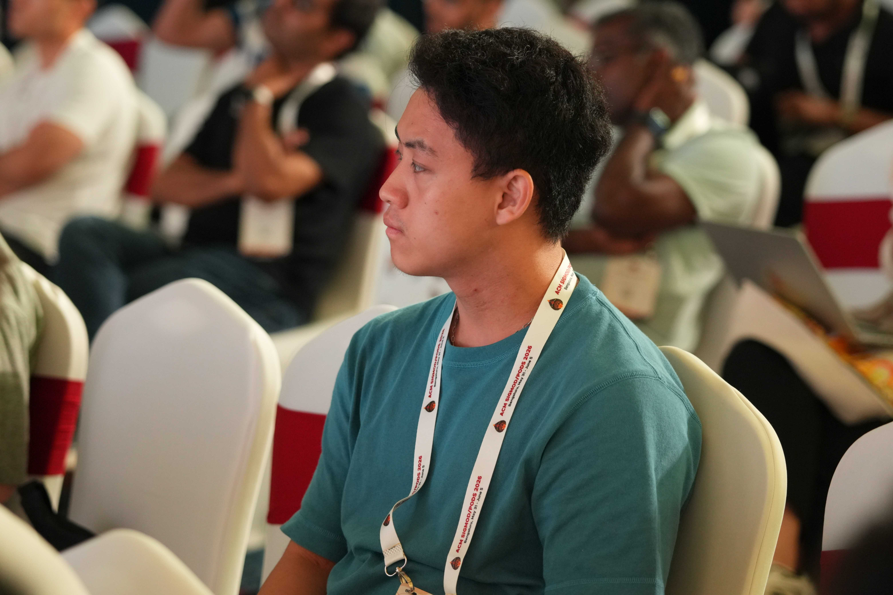
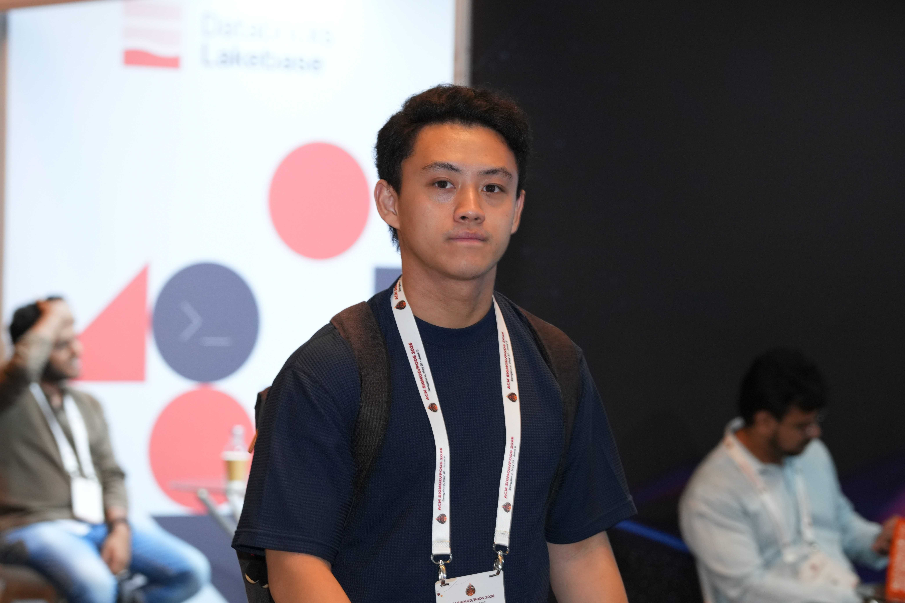

PLAID Inc. · Tokyo, Japan
- Contributing to Mila, a proprietary distributed OLAP engine optimized for high-concurrency real-time data processing.
- Optimized the storage engine by identifying and resolving bottlenecks through systematic stress testing, accelerating query execution speed by 1.6×.
Mirrativ Inc. · Tokyo, Japan
- Designed and developed an S3-compatible in-house object storage system.
- Built high-performance benchmarking tools for stress-testing storage backends, covering limit testing, mixed R/W workloads, and long-term durability assessments.
- Resolved port exhaustion and TIME_WAIT spikes during load testing by tuning
MaxIdleConnsPerHost in the internal reverse proxy.
- Reduced disk I/O and memory consumption during multipart downloads by refactoring to stream data directly, eliminating temporary disk spooling.
- Prevented OOM errors under high concurrency by redesigning the in-memory cache with a dynamically adjustable eviction policy.
- Achieved 100% response reliability during benchmarks by fixing race conditions with proper mutual exclusion.
University of Toronto · Toronto, Canada
- Implemented a full-set TPC-C benchmarking suite from scratch for evaluating distributed transaction performance.
- Identified a fatal execution error from improper CPU pinning that had prevented system initialization.
- Simulated geographically distributed networks via synthetic latency injection using Linux
tc.
- Work accepted at ACM SIGMOD 2026.
Teaching Experience
Keio University — Independently Designed and Taught Courses
- Fundamentals of Information Technology 1 — Taught core CS concepts (system architecture, internet protocols, cybersecurity) and mentored Python programming assignments.
- Fundamentals of Information Technology 2 — Supervised project-based game development in Python, evaluated student projects, and provided feedback on software design.
Publications
Yunhao Mao, Harunari Takata, Michalis Bashras, Yuqiu Zhang, Shiquan Zhang, Gengrui Zhang
and Hans-Arno Jacobsen.
"Epoch-based Optimistic Concurrency Control in Geo-replicated Databases."
Proceedings of the 2026 ACM SIGMOD International Conference on Management of Data.
SIGMOD 2026
Skills
Go
C++
Java
Python
LaTeX
Git
Docker
Languages: Japanese (Native) · English (Proficient) · Chinese (Beginner)
Honors & Awards
Kobe Bussan Foundation Scholarship for Study Abroad
2025 · ¥1,850,000 — Competitive scholarship for students pursuing studies and research at international institutions.
Things I Like
Basketball · Memes · Photography · Jamiroquai
How to Reach Me
Send me an email at tkthdev (at) gmail.com — I read everything sent there.
Photos

